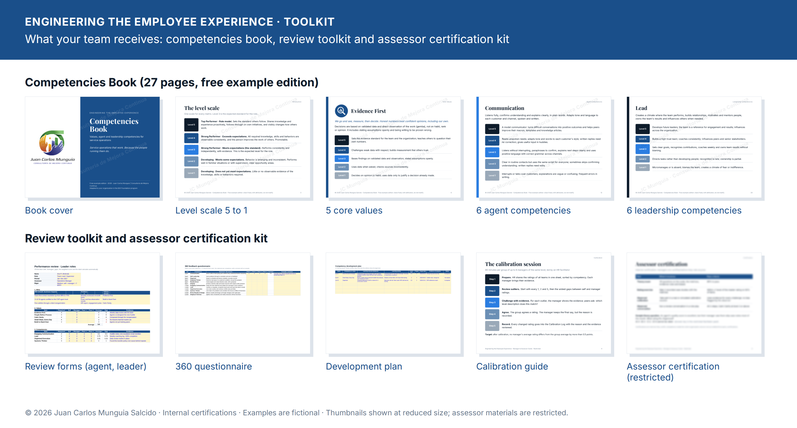

Desarrollo de talento · Estándar 1
Ingeniería de la Experiencia del Colaborador Engineering the Employee Experience
Desarrolla a las personas que operan el servicio
Los agentes tratan a los clientes como ellos son tratados. Ingeniería de la Experiencia del Colaborador (Engineering the Employee Experience) es el programa hermano de Ingeniería de la Experiencia del Cliente, y trabaja en cómo se trata a tu gente: cómo se ve un “buen trabajo” en cada puesto, cómo se evalúa y cómo crece cada persona. Empieza con un plan de carrera por competencias hecho para tu operación, y después un ciclo de evaluación que tus gerentes se certifican para conducir por su cuenta. Lo dirige un psicólogo organizacional con cédula y Lean Six Sigma Master Black Belt, con talleres ya impartidos a más de 250 colaboradores.
Módulo 1 · El plan de carrera por competencias
Un solo estándar, de agente a director
- 5 valores clave con los que se evalúa a todos, cada uno con cinco niveles observables.
- 6 competencias de agente: Comunicación · Autoliderazgo · Organización · Pensamiento analítico · Orientación a resultados · Integridad.
- 6 competencias de liderazgo para supervisores y gerentes: Comunicación que involucra · Liderar · Ejecución organizada · Pensamiento sistémico · Impulsa resultados y cambio · Integridad y equidad.
- Una escalera de carrera de 5 puestos de agente de atención al cliente a director, con el nivel que requiere cada puesto y la credencial CXE y Belt de cada paso.
- Evaluaciones con evidencia: autoevaluación, evaluación del gerente y de pares, calibración entre gerentes y un plan de desarrollo revisado cada mes.

Lo que recibe tu equipo · clic para ampliar
Equipo · 2 meses · hasta 30 personas
Programa Fundamentos
Valores y plan de carrera
Un equipo o familia de puestos que necesita un estándar claro.
- Valores con una escala de conducta de cinco niveles, construida con tus líderes
- Matriz de competencias para hasta tres puestos
- Descripción de niveles para una escalera de carrera
- Formato de evaluación y un ciclo piloto
- Gerentes certificados internamente como evaluadores
- Una sesión semanal contigo
Departamento · 4 meses · de 30 a 150 personas
Programa Construcción
Evaluaciones y desarrollo
Un departamento, línea de negocio o programa de cliente.
- Todo lo del programa Fundamentos
- Matrices completas de agentes y líderes, y escaleras de carrera con criterios de promoción
- Retroalimentación 360, sesiones de calibración y un ciclo completo de evaluación
- Un plan de desarrollo para cada persona y un catálogo de aprendizaje alineado a competencias
- Socios de RR. HH. certificados internamente como calibradores
- Acompañamiento quincenal
Empresa · 6 meses · más de 150 personas
Programa Transformación
Sistema de talento
Sitios, regiones o toda la empresa.
- Todo lo anterior
- Modelo para toda la empresa ligado a contratación, promoción y sucesión
- Entrevistas por competencias y role plays para reclutamiento
- Programa de mentoría, coaches internos y un tablero de talento
- Tu equipo de RR. HH. certificado internamente para administrar y actualizar el modelo
- Entrega documentada y cierre
Complementos para cualquier programa: talleres de Inteligencia emocional, Administración del tiempo, Coaching y retroalimentación, Manejo del estrés y Meditación. Para organizaciones en México, un paquete NOM-035-STPS-2018 (la norma mexicana sobre riesgo psicosocial en el trabajo): política de prevención, guías de referencia por tamaño de centro de trabajo, análisis y plan de acción. Mismos términos que todos mis programas: una llamada gratuita de 30 minutos, propuesta en 5 días hábiles, contratos renovables de dos meses, doce meses como máximo.
Construye el camino. Retén a tu gente.
Descarga gratis el Libro de Competencias para ver completos los valores, las competencias de agentes y líderes y el plan de carrera, y luego hablemos de lo que haría falta para construir el tuyo.
Edición de ejemplo gratuita, 27 páginas, hecha para una operación de servicio ficticia. Las certificaciones son internas y no son certificaciones acreditadas por terceros. Las áreas de competencia se basan en el PMCD Framework del PMI (3.ª ed.); los nombres y descripciones son obra original, sin afiliación ni aval del PMI.